{kind=link}
{kind=link}
Über Jahre waren die Ninjas gefürchtete Krieger im Insel-
reich der aufgehenden Sonne. Ihre Kampfkunst war ein lang
gehütetes Geheimnis, bis der Shogun Kunitoki grau-
same Verbrechen beging.
reich der aufgehenden Sonne. Ihre Kampfkunst war ein lang
gehütetes Geheimnis, bis der Shogun Kunitoki grau-
same Verbrechen beging.
LONG PLAY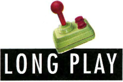So sieht die Überschrift im originalen Spielebericht aus.
von Rene Windschmied
Die Vorgeschichte, Zitat: »200
Jahre lang regierte der Clan
der Fujiwara Japan. Ihre Herr-
schaft war sehr grausam, so daß
einige Handwerker und Bauern
beschlossen, ihre Heimat zu ver-
lassen und zum Toga-Kuve-Berg
zu gehen. Hier bildeten sie sich zu
den besten Kriegern Japans aus:
den Ninjutsu. Vierhundert Jahre
später waren die Ninjutsu von allen
gefürchtet, nachdem sie die Ge-
waltherrschaft des Fujiwara-Clans
beendet hatten. Aber wie sollte es
anders sein: Schon strebte ein an-
derer Shogun danach, die Ge-
heimnisse der Ninjutsu kennenzu-
lernen. Der Shogun Kunitoki
schmiedete einen teuflischen
Plan. Einmal in jedem Jahrzehnt
trafen sich die Ninjutsu auf der
Insel von Lin-Fen, wo sie dem
Schrein der »Weißen Ninja« ihre
Ehre erwiesen, um weiteren Fein-
schliff zu erhalten. Kunitoki konnte
die versammelten Ninjas überwäl-
tigen und begann dann, seine ei-
genen Leute in der Kampfeskunst
der Ninjas zu unterweisen. Mit Hil-
fe der gestohlenen Koga-Rollen
konnte er dies verwirklichen. Doch
Kunitoki wußte nicht, daß ein Ninja
während des Gemetzels an einem
anderen Ort weilte, um den
Schrein des Bunkurkan zu bewa-
chen, und so überlebte. Armakuni
mußte dieses Mal die Aufgabe er-
füllen, was ihn zum letzten seiner
Zunft machte. Er hörte von den Ge-
schehnissen auf Lin-Fen und eilte
sofort los, um schreckliche Rache
zu nehmen, sowie die Koga-Schrif-
ten zurückzuhol en und die Ehre
der Ninjas wiederherzustellen.
Also Freunde, laßt uns dem letzten
Ninja helfen, seine Aufgabe zu er-
füllen.
Level I:
The Garden Buddhas
Es gibt zwei Lösungsmöglich-
keiten. Entweder in Richtung
Osten oder Süden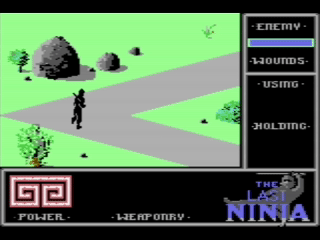Empfehlung: Nehmt den Weg nach Süden.
Snapshot Vice 3.9
. Bei der Weg-
wahl nach Süden stoße ich nach
kurzer Zeit auf Kunitokis Leute (mit
großer Fangemeinde). Da Angriff Achtet darauf, dass ihr richtig steht, sonst trefft ihr die Hitbox des Gegners nicht!
Snapshot Vice 3.9
Achtet darauf, dass ihr richtig steht, sonst trefft ihr die Hitbox des Gegners nicht!
Snapshot Vice 3.9
bekanntlich die beste Verteidigung
ist, attackiere ich den Feind mit
Fußtritten und Schlägen. Nach ei-
niger Zeit liegt der Feind am Boden
und rührt sich nicht mehr. Bei wei-
teren Erforschungen des Weges
wird auf einem Felsen ein Glitzern
sichtbar. In der Nähe des Felsens,
halte ich plötzlich ein Schwert Das Schwert hilft bei den kommenden Kämpfen und Rätseln!
Snapshot Vice 3.9
in
Das Schwert hilft bei den kommenden Kämpfen und Rätseln!
Snapshot Vice 3.9
in
den Händen. Super: Damit kann
ich mich gut meiner Haut wehren.
Mit dem Schwert in der Hand errei-
che ich einen Bach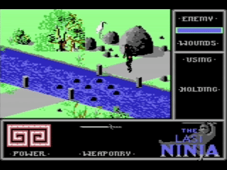Am Ufer gibt es eine kleine Stelle, die leicht heraussteht. Hüpfe dort ab.
Snapshot Vice 3.9
, ohne Brücke
weit und breit, so daß nur durch ei-
nen Sprung das andere Ufer zu er-
reichen ist. An einer geeigneten
Stelle ragt das eine Ufer in den
Fluß hinein und so konnte ich
mich, Stein zu Stein springend, bis
zum anderen Ufer vorarbeiten.
Nach Fortsetzung des Weges und
einigen Auseinandersetzungen
sehe ich, was Kunitoki mit meinen
Freunden Unser Freund ist tot, aber immernoch nützlich. Er trägt etwas bei sich.
Snapshot Vice 3.9
angerichtet hat. Jede
Unser Freund ist tot, aber immernoch nützlich. Er trägt etwas bei sich.
Snapshot Vice 3.9
angerichtet hat. Jede
Hilfe kommt zu spät, lediglich die
Waffe, ein Chacko, kann ich an
mich nehmen. Beim weiteren
Durchstöbern des Parks finde ich
einen Schlüssel Achtung! Um den Schlüssel aufzuheben, musst du scheinbar erst den Sack aufheben!
Snapshot Vice 3.9
und einen Sack
Achtung! Um den Schlüssel aufzuheben, musst du scheinbar erst den Sack aufheben!
Snapshot Vice 3.9
und einen Sack Hier findest du den Sack im nächsten Frame!
Snapshot Vice 3.9
,
Hier findest du den Sack im nächsten Frame!
Snapshot Vice 3.9
,
den ich mitnehme, ohne zu wis-
sen, wozu die Gegenstände gut
sein können. Ich treffe auf eine
Weggabelung, Norden oder We-
sten. Der Weg nach Norden endet
an einem Sumpf, wobei an dem
Felsen dort wieder etwas glitzert
(Rauchbomben Unbedingt aufheben! Ohne die kommt ihr nicht weiter.
Snapshot Vice 3.9
). Dieser Weg er-
Unbedingt aufheben! Ohne die kommt ihr nicht weiter.
Snapshot Vice 3.9
). Dieser Weg er-
scheint mir dennoch unheimlich ,
so daß ich in Richtung Westen
marschiere. Fehlkalkulation, denn
ich habe mich im Kreis bewegt. Al-
so geht's weiter in Richtung
Sumpf. Dort befinden sich mehre-
re Inseln, die mich durch Sprünge
endlich ans andere Ufer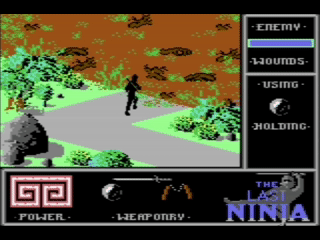Der Weg durch den Sumpf ist kein einfacher und vor allem Millimeterarbeit
Snapshot Vice 3.9
bringen ,
aber wie soll es weitergehen? Hilfe
erhalte ich vom steinernden Budd-
ha im Garten, der empfiehlt die Su-
che nach einem Apfel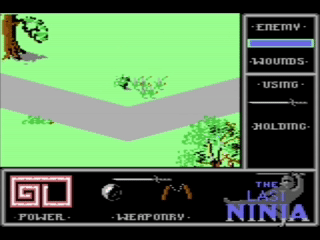Mitnehmen, der Apfel gibt ein Extraleben.
Snapshot Vice 3.9
und Wurf Wurfsterne können das Leben einfacher machen, wenn man richtig zielt.
Snapshot Vice 3.9
-
Wurfsterne können das Leben einfacher machen, wenn man richtig zielt.
Snapshot Vice 3.9
-
sternen. Aber nun den Ausgang
ins zweite Level suchen! Der Weg
hierher ist gefunden, nur befindet
sich hier ein Drache als Wächter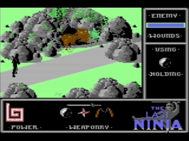Tipp: Um an dem Drachen vorbeizukommen eignen sich am besten die Rauchbomben. Viel
Glück, beim Vorbeikommen!
Snapshot Vice 3.9
.
Mit den Waffen ist dieser nicht zu
bezwingen, bei Annäherungen
spuckt er Feuer und versperrt den
Durchgang. Um weiterzukommen,
muß wieder gesprungen werden,
aber erst gilt's den richtigen Punkt
{kind=link}
für den Absprung zu finden. Es
bietet sich der Weg am Felsen
ganz links an. Der Drache spuckt
zwar Feuer, erreicht mich aber
nicht. Mit dem Joystick ziehe ich
einmal nach links und drücke
Feuer, so lange, bis es nicht mehr
weitergeht. In dem Moment, wo
der Drache Atem holt, springe ich
ab (Joystick nach Nordwest und
Feuer drücken) und man springt
vorbei.
Level 2:
The Wilderness
Ich befinde mich jetzt vor einem
großen Tor mit zwei Steinlöwen.
Am Fuß des rechten Löwen befin-
det sich ein Kletterhaken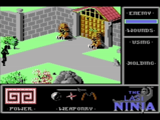Ohne den Haken kommt man nicht weiter, also auf keinen Fall liegen lassen.
Snapshot Vice 3.9
. Das Tor
ist verschlossen und mit Klettern
nicht zu überwinden, da die Wän-
de zu glatt sind. Aufdem Weg nach
rechts begegne ich den Leuten
Kunitokis Mit der Auswahl an Waffen ist der Gegner schnell besiegt.
Snapshot Vice 3.9
und habe einige Kämpfe
Mit der Auswahl an Waffen ist der Gegner schnell besiegt.
Snapshot Vice 3.9
und habe einige Kämpfe
zu bestehen. Ich laufe weiter, bis
ich auf eine Bergwand stoße. Mit
dem Kletterhaken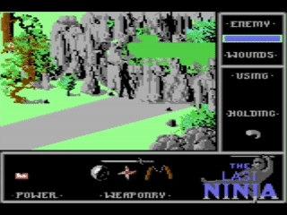Und hier brauchen wir schon den vorher eingesammelten Haken.
Snapshot Vice 3.9
erklimme ich
den Berg, passiere mehrere Höh-
len, ohne sie zu betreten. Unten
angekommen Nach Westen, oder Norden?
Snapshot Vice 3.9
, gabelt sich der
Nach Westen, oder Norden?
Snapshot Vice 3.9
, gabelt sich der
Weg, Westen oder Norden (We-
sten: führt zum Sumpf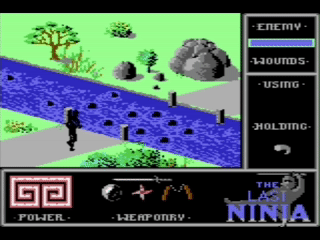Beim Springen nicht zu sehr zögern, sonst bleibt man stecken!
Snapshot Vice 3.9
, Norden:
zum Bach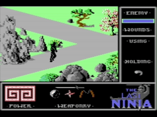Der Weg über den Bach funktioniert wie vorher.
Snapshot Vice 3.9
). Bei der Wahl durch
den Sumpf gelange ich wieder von
Insel zu Insel springend ans ande-
re Ufer. Im Verlauf des Wegs gelan-
ge ich wieder auf eine Gabelung.
Richtung Osten erweist sich als
Sackgasse. Auf dem anderen Weg
suche ich einen Kampfstock Zwischen all dem Bambus versteckt sich ein Kampfstock.
Snapshot Vice 3.9
und
Zwischen all dem Bambus versteckt sich ein Kampfstock.
Snapshot Vice 3.9
und
treffe dann auf zwei hintereinan-
derstehende Steindrachen. Es er-
weist sich als Trugschluß einfach
an den Kolossen vorbeizugehen,
denn in Höhe der zweiten Figur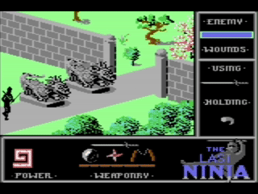Traust du dich an den Statuen vorbei?
Snapshot Vice 3.9
spuckt diese Feuer und verwandelt
mich in einen Haufen Asche. Hier
ist also kein Weiterkommen, bleibt
nur noch der Ausweg in Richtung
Fluß Wieder zurück über den Fluß.
Snapshot Vice 3.9
. Dieser wird nun analog der
Wieder zurück über den Fluß.
Snapshot Vice 3.9
. Dieser wird nun analog der
Schritte von Level 1 durchquert,
bis an den Rand laufen und von
der Kante abspringen. Hier ist wie-
der eine Gabelung, und Anhänger
des Erzfeindes Kunitokis lauern.
Es ist an der Zeit, die Wurfsterne
auszuprobieren. Der Kampf mit
dem Schwert hat mich viel Energie
gekostet, während die Wurfge-
schosseTipp: Zielen nicht vergessen! - Ich habe es leider nicht auf Anhieb geschafft...
Snapshot Vice 3.9
mir absolut nichts geschieht. In
nördlicher Richtung treffe ich auf
Erkenntnisse
eine erneute Gabelung, die eine
Richtung erweist sich als Sackgas-
se und in der anderen Richtung fin-
de ich einen Handschuh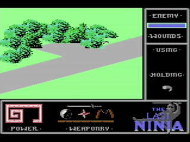Hier findet ihr den Handschuh.
Snapshot Vice 3.9
und eine
glänzende Flüssigkeit Was bewirkt dieser Trank außer, dass man glitzert?
Snapshot Vice 3.9
. Beim Be-
Was bewirkt dieser Trank außer, dass man glitzert?
Snapshot Vice 3.9
. Beim Be-
rühren der Flüssigkeit leuchtet der
Ninja auf. Es ist unbedingt Beei-
lung geboten, denn nur in dieser
Leuchtphase besteht die Möglich-
keit, an den Steindrachen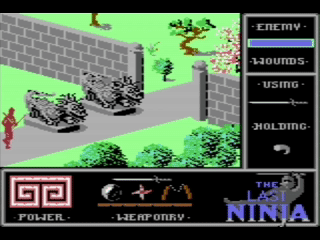Vorbei an den Steindrachen, du Superman!
Snapshot Vice 3.9
vorbei-
zukommen und so ins dritte Level
zu gelangen.
Level 3:
Palace Garden
Dem Weg in Richtung Osten bis
zu einer neuen Gabelung folgend,
erreiche ich einen Brunnen. Hier
schnell einige Schluck Wasser zur
Erfrischung getrunken, denn die
Kämpfe mit Kunitokis Leuten ha-
ben Kraft gekostet und durstig ge-
macht. Der Brunnen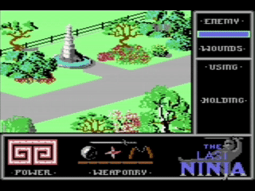Eine kleine Rast am Brunnen sorgt für so manch einen Gedanken.
Snapshot Vice 3.9
spricht und
weist auf die Suche nach einem
Medaillon hin. Weiter auf diesem
Weg gelange ich an einen Fluß-
lauf. Ich überspringe ihn und finde
auf der anderen Seite auf dem
Weg das Medaillon Das Medallion ist bisher der wohl am einfachsten zu greifende Gegenstand.
Snapshot Vice 3.9
. Auf dem
Das Medallion ist bisher der wohl am einfachsten zu greifende Gegenstand.
Snapshot Vice 3.9
. Auf dem
Rückweg wieder am Brunnen an -
gekommen, wird mir von ihm die
Suche nach einer Rose Hinweis: Den Vorschlag zur Rose bekommt man nur, wenn man vorher den versteckten Apfel
findet! Dieser befindet sich in einem kleinem Bambuswäldchen. empfoh-
Hinweis: Den Vorschlag zur Rose bekommt man nur, wenn man vorher den versteckten Apfel
findet! Dieser befindet sich in einem kleinem Bambuswäldchen. empfoh-
len. Da nichts weiter zu finden ist,
geht es bis zur Weggabelung zu-
rück in Richtung Norden, hier steht
ein zweiter Brunnen, der mir den
gleichen Rat gibt. Etwas weiter fin-
de ich die Rose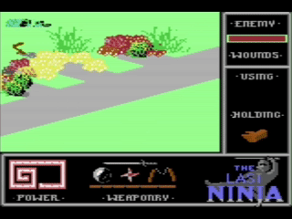Vorsicht beim Pflücken, sonst dürft ihr wieder von vorne anfangen!
Snapshot Vice 3.9
, wobei ich den
Handschuh anziehe, denn die Sta-
cheln dieses Exemplars sind töd-
lich. Der weitere Weg führt wieder-
um auf eine Gabelung, östlich be-
finden sich Überreste einer
Brücke Hier ist eine zerstörte Brücke.
Snapshot Vice 3.9
, die unpassierbar ist. Wie-
Hier ist eine zerstörte Brücke.
Snapshot Vice 3.9
, die unpassierbar ist. Wie-
der zurück zur Gabelung und in die
andere Richtung, direkt zu einem
dritten Brunnen, der stumm bleibt.
Hier geht es dann weiter über ein
Flüßchen zu einer goldenen Figur Achtung, ohne Medallion geht es nicht weiter!
Snapshot Vice 3.9
,
Achtung, ohne Medallion geht es nicht weiter!
Snapshot Vice 3.9
,
wo das Medaillon übergeben wird.
Armakunis kniet nieder und verläßt
das dritte Level.
Sumpf
Level 4:
The Dungeons
Ich folge dem Weg und werde
von einer Wache Zu Beginn dürfen wir uns erst einmal warm kämpfen.
Snapshot Vice 3.9
angegriffen. Als
Zu Beginn dürfen wir uns erst einmal warm kämpfen.
Snapshot Vice 3.9
angegriffen. Als
ich mich den beiden Pfeilern nähe-
re, öffnet sich unter mir der Boden
und ich verschwinde in einer Ver-
senkung. In dem unterirdischen
Gewölbe werde ich von einer »net-
ten« Wache begrüßt Im Dungeon erwartet uns eine unangenehme Überraschung.
Snapshot Vice 3.9
Im Dungeon erwartet uns eine unangenehme Überraschung.
Snapshot Vice 3.9
einem Angriff. Mit Hilfe meines
Schwertes bringe ich den Gegner
außer Gefecht. Nach diesem Auf-
tritt gehe ich weiter durch das Ver-
lies. Ich finde an der Wand ein Seil Wie immer gilt auch hier: Einsammeln, sonst kommt ihr nicht weiter!
Snapshot Vice 3.9
Wie immer gilt auch hier: Einsammeln, sonst kommt ihr nicht weiter!
Snapshot Vice 3.9
und nehme es mit. Überall liegen
Skelette herum und Ratten tum-
meln sich in Hülle und Fülle. Dann
erfolgt der Angriff von einem Kno-
chenbruder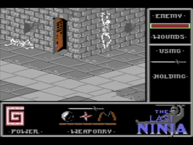Es gibt tatsächlich lebendige Skelette.
Snapshot Vice 3.9
das Skelett zur Strecke gebracht
und es zerfällt in seine Bestandtei-
le. Nach weiteren Beobachtungen
in den Gängen erblicke ich schwe-
bende Geister Und Geister gibt es auch noch.
Snapshot Vice 3.9
, Skelette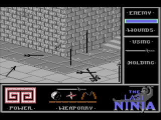Dieser Dungeon ist voller Skelette.
Snapshot Vice 3.9
und eine
Und Geister gibt es auch noch.
Snapshot Vice 3.9
, Skelette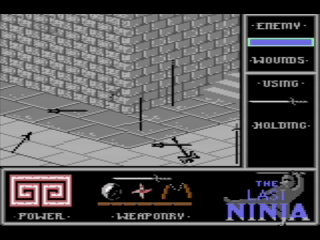Dieser Dungeon ist voller Skelette.
Snapshot Vice 3.9
und eine
Riesenspinne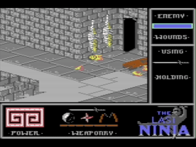Es gibt außerdem auch noch einen großen haarigen Freund.
Snapshot Vice 3.9
. Dann finde ich den
Ausgang Jetzt wisst ihr auch warum wir das Seil brauchten.
Snapshot Vice 3.9
, Ringe führen an der
Jetzt wisst ihr auch warum wir das Seil brauchten.
Snapshot Vice 3.9
, Ringe führen an der
Wand nach oben. Das Seil wird in
den Ringen befestigt, und dann an
der Wand nach oben ins Level 5
geklettert.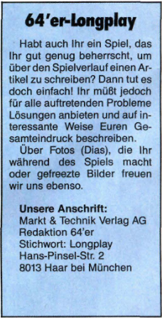
Level 5:
The Palace
Am Ende des Weges befindet
sich eine Tür, die jedoch keinen Zu-
gang zum Palast ermöglicht. Auf
dem Weg hierher hatte ich schon
eine Tür gesehen, die ich jetzt auf
dem Rückweg untersuche, aber
auch hier ist kein Eintritt möglich.
Ach, da fällt mir gerade noch recht-
zeitig ein, daß ich ja einen Schlüs-
sel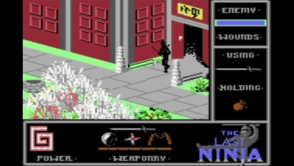Den Schlüssel vom Anfang benötigen wir für diese Tür.
Snapshot Vice 3.9
paßt. Jedoch kann ich mich im Pa-
last nicht unbemerkt bewegen,
denn die Wache hat mich beob-
achtet. Es gibt Auseinanderset-
zungen, aber durch meinen Wurf-
stein trage ich den Sieg davon. Der
Weg nach Westen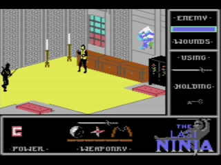Hier ist wohl eine Sackgasse.
Snapshot Vice 3.9
ist eine Niete.
Nach Osten gelange ich an der
Eingangstür vorbei zu einer erneu-
ten Weggabelung. Richtung Nor-
den Auf nach Norden.
Snapshot Vice 3.9
Auf nach Norden.
Snapshot Vice 3.9
ist leider nichts zu holen. Richtung
Süden ist ebenfalls erfolglos, so
daß letztlich Osten übrigbleibt.
Hier erwartet mich eine überle-
bensgroße Figur mit einem Breit-
schwert. Als ich ganz dicht an die-
ser Figur vorbeilaufe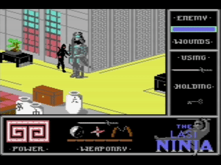Wie wir bereits gelernt haben, Steinfiguren haben es in sich. Also Achtung!
Snapshot Vice 3.9
, gelange ich
in Richtung Osten in einen Raum,
wo sich beim Berühren des Tep-
pichs Armakuni auflöst. Nichts wie
weg, in einen anderen Raum. Hier
stehen wahllos viele Töpfe herum
und beim Untersuchen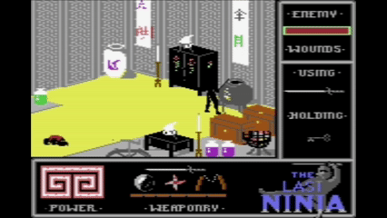Ob uns einer dieser Töpfe weiterhelfen kann?
Snapshot Vice 3.9
derselben
verfärbt sich Armakunis grün. Na-
ja, wenn ich das Spiel lösen will,
müssen schon gewisse Opfer er-
bracht werden. Wenigstens kom-
me ich in "grünem Zustand"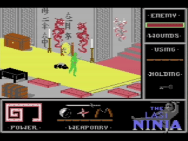Grün gefärbt geht es durch den Rest des Levels!
Snapshot Vice 3.9
erst
einmal über den Teppich in das
letzte Level.
Level 6:
The Inner Scantum
Der Weg führt nach rechts, und
treffe dann dort in einer Kammer
auf ein Fernrohr Wir können durch das Teleskop schauen, nettes Gimmick.
Snapshot Vice 3.9
. Außer einem Blick
Wir können durch das Teleskop schauen, nettes Gimmick.
Snapshot Vice 3.9
. Außer einem Blick
über die Dächer des Palastes ist in
dem Zimmer nichts Lukratives zu
bekommen. Ebenso auch nicht in
dem zweiten Raum vom Hausflur
ausgehend. Im nächsten Raum
steht eine Flasche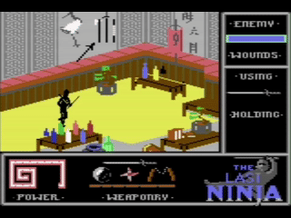Die Flasche muss auf jeden Fall mit!
Snapshot Vice 3.9
, die mitgenom-
men wird. Im vierten Raum ist eine
lange Fensterwand und eine weite-
re Tür. In diesem Raum befinden
sich viele Gefäße sowie am Ende
eine spanische Wand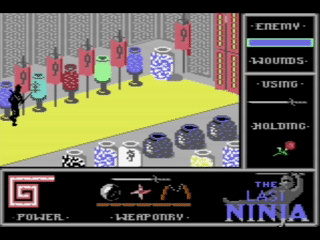Die Rose ist hier unser Schlüssel.
Snapshot Vice 3.9
. An dieser
spanischen Wand befindet sich ein
rotes Kästchen, in das ich die Rose
stecke und es zu öffnen versuche.
Es gelingt, die Wand öffnet sich
und ich komme auf einen Gang,
wo ein Hund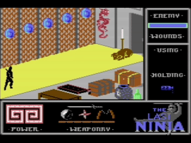Zum Glück haben wir gerade vorhin die Flasche aufgesammelt
Snapshot Vice 3.9
schläft. Dieser wird
wach und greift mich an. Mittels
der Flasche schlage ich ihm eins
auf den Kopf, so daß ich in den
nächsten Raum gelange, wo je-
doch eine Figur mit Pfeil und Bo-
gen steht. Um zu entkommen, be-
rühre ich einen Farbklecks auf
dem Boden, mit dem Ergebnis,
daß ich mich rot verfärbe und mich
somit gefahrlos an dem Stein-
goliath vorbeimogeln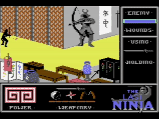Und wir müssen uns auch hier wieder farbig anpassen.
Snapshot Vice 3.9
stehe ich vor dem Endgegner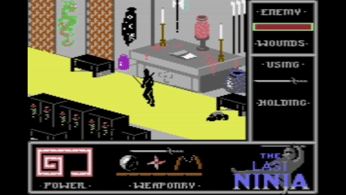Der Endboss ist aufgetaucht! Viel Glück! Ich habe es kein einziges Mal auf Anhieb
geschafft.
Snapshot Vice 3.9
: un-
scheinbar, dick, mit einem Breit-
schwert. Dieser Gegner ist ein
zäher Kämpfer. In dem Moment,
wo er am Boden liegt, gelange ich
in einen weiteren Raum, wo sich
auf einem Altar die gestohlenen
Koga-Schriften Jetzt noch schnell die Schriftrollen einsammeln und der Endscreen verabschiedet euch.
Snapshot Vice 3.9
befinden. Als ich
Jetzt noch schnell die Schriftrollen einsammeln und der Endscreen verabschiedet euch.
Snapshot Vice 3.9
befinden. Als ich
sie holen will und dabei das Fußbo-
denmuster betrete, verschwindet
Armatunis. Wiederum eine Falle
von Kunitokis. Ich versuche erneut
auf das Muster am Boden zu treten
und springe dann in die Mitte, so
daß ich dadurch die Koga-Schrift-
rollen in meinen Besitz nehmen
kann. Hier endet das Spiel von
»The Last Ninja«.